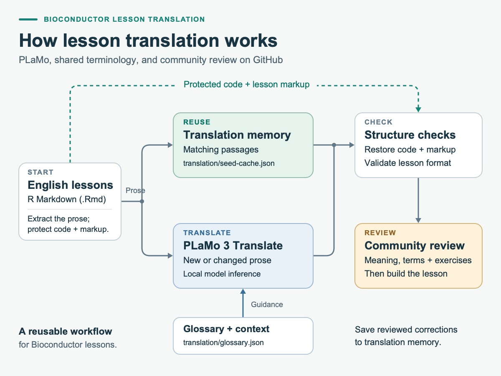

In the report on our Japanese workshops, I explained why our Crowdin integration had become difficult to maintain. Keeping executable R Markdown lessons in sync required file conversions, translation synchronisation and reconstruction of buildable lessons. I remain grateful for Crowdin’s support. We are now moving to PLaMo-based AI translation directly in the lesson repositories, with code and markup protected and community review on GitHub.
I am introducing a new AI-assisted translation workflow in the bioconductor-translations organisation, built around PLaMo 3 Translate and review on GitHub. The first lesson is Introduction to data analysis with R and Bioconductor, with published editions in Japanese, Spanish, Simplified Chinese, French and Urdu. These editions are open for community review and improvement.
What is PLaMo 3 Translate?
PLaMo 3 Translate is a family of large language models developed by Preferred Networks (PFN) specifically for translation. PFN’s November 5, 2026 technical article, PLaMo 3 Translate: World-Class Translation with Open Weights—Here’s How We Built It, explains the development process and the release of downloadable model weights.
PFN trains the models on source–translation pairs and further refines them to prefer better translations. Smaller models also learn from the 31B model through distillation. The family supports 53 languages and can take surrounding context and a glossary into account. These features fit our lesson workflow: we can supply nearby explanations and preferred technical terminology when translating a passage.
The models come in four sizes: 0.8B, 2B, 8B and 31B parameters. Our workflow uses pfnet/plamo-3-translate-8b-MLX-4bit, the 8B model in a 4-bit MLX format that reduces memory use for local generation on Apple silicon Macs. The model weights are distributed under the PLaMo Community License.
Explore the five language editions
The introductory lesson covers organising data in spreadsheets, using R and RStudio, manipulating data with dplyr, and visualising data. Each language edition has a lesson website for learners and a repository for contributors:
| Language | Read the lesson | Contribute on GitHub |
|---|---|---|
| Japanese | Japanese lesson | bioc-intro-plamo3translate-ja |
| Spanish | Spanish lesson | bioc-intro-plamo3translate-es |
| Simplified Chinese | Simplified Chinese lesson | bioc-intro-plamo3translate-zh-hans |
| French | French lesson | bioc-intro-plamo3translate-fr |
| Urdu | Urdu lesson | bioc-intro-plamo3translate-ur |
Our Crowdin project also received Portuguese translation contributions, and I am grateful to everyone who contributed them. I am sorry that Portuguese is not included among these editions: the PLaMo translation model we currently use does not support Portuguese, which is absent from its supported-language list.
Translation coverage and review are still in progress. Some setup pages and interface labels remain in English. At the time of writing, the published Urdu episodes are available, but that repository’s updater configuration and translation guide still refer to Japanese and need adaptation before being used to regenerate Urdu text.
How the translation system works

- Read an English source revision. The translator reads the upstream lesson’s R Markdown files from a Git revision without checking it out over the translated working files.
- Reuse matching translations. Each translation repository stores its versioned translation memory in
translation/seed-cache.json. This JSON file stores previous translations and review statuses by source passage and episode. Matching records can be reused, while new or changed prose is sent to the model. - Guide terminology and protect structure. A language-specific glossary and contextual guidance help disambiguate terms. Code blocks, inline code, link destinations and lesson markup are protected during translation, and structural checks run before lesson files are replaced.
- Review and build. Maintainers inspect the translated text and memory changes, build the lesson, and commit the reviewed result. The translator itself does not commit or push changes.
Update a translation yourself
To update a translation yourself, follow translation/README.md in the repository for your language. These documents cover environment setup, fetching the English source, previewing changes, generating translations, reviewing the results and building the lesson:
- Japanese: translation/README.md
- Spanish: translation/README.md
- Simplified Chinese: translation/README.md
- French: translation/README.md
For Urdu, the updater configuration and documentation caveat above still applies.
For example, in the Japanese repository, after configuring the upstream remote as described in its guide, a maintainer can run:
git fetch upstream main
uv run --locked scripts/translate.py --source-ref upstream/main --dry-run
uv run --locked scripts/translate.py --source-ref upstream/main --update-memory
git diff -- episodes translation
Rscript scripts/build.RThe dry run shows which passages can be reused and which need translation, without generating new text or writing lesson files. The --update-memory option saves new translation records to translation/seed-cache.json and source provenance to translation/source-manifest.json for review. The local runtime cache under .cache/translation/ is ignored by Git. Other editions may use a different remote name, so follow translation/README.md in the repository you are updating.
The translator also checks for local edits and stops before overwriting an edited lesson. Small build adaptations are recorded separately with checks against the expected source. Images, datasets and episode ordering still need separate maintenance when the English lesson changes.
Local generation, reusable community knowledge
The workflow pins the model revision and locks its Python dependencies, recording the source revision and model provenance with the translation resources.
Generating new translations with the current implementation requires an Apple silicon Mac, Python 3.12 and uv; the first model download is about 6 GB. Planning updates and replaying cached translations can run with Python 3.12 alone on other platforms. Reading lessons and contributing a review on GitHub require no model installation.
The translation memory gives community review a lasting role. You can inspect the records in the Japanese translation repository’s translation/seed-cache.json. Newly generated records are marked machine. After checking a record in translation/seed-cache.json, a reviewer can mark it reviewed so that its wording is retained for matching source text in the same episode and language pair, even when model or glossary settings change. The French translation repository’s translation/README.md explains this review process.
Help make the lessons better
A successful build shows that the lesson can be rendered, but readers and instructors still need to check its meaning. A translation can sound fluent while changing an exercise condition, using an unfamiliar technical term, or losing an important distinction. The Simplified Chinese translation repository’s translation/README.md explicitly identifies its initial translation memory as machine generated and needing review.
If you use one of these languages, please try an episode and compare it with the English lesson. We especially welcome help with:
- Language and terminology: suggest clearer explanations and vocabulary familiar to your local research community.
- Exercises and teaching: check that questions, solutions and instructor notes preserve the original learning goals.
- Corrections that carry forward: help maintainers update the glossary, context guidance and translation memory alongside the lesson text.
Open an issue in the relevant repository with the episode name, the passage you are referring to, and a suggested correction or explanation. Pull requests are welcome too; please follow that repository’s contribution and translation guides. If you are interested in reviewing translations, adding support for another language, or translating another lesson, join the discussion in the #documentation-translation channel on the Bioconductor community chat.
Thank you to the original lesson authors and maintainers, and to everyone translating, reviewing and teaching these materials. This work builds on the community’s translation efforts described in the Japanese workshop report and is supported by the Bioconductor Developer Champions Program.
© 2026 Bioconductor. Content is published under Creative Commons CC-BY-4.0 License for the text and BSD 3-Clause License for any code. | R-Bloggers